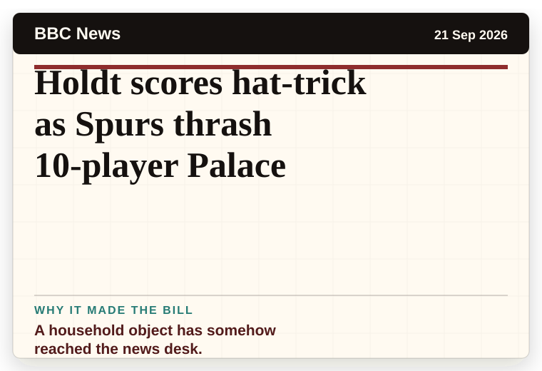
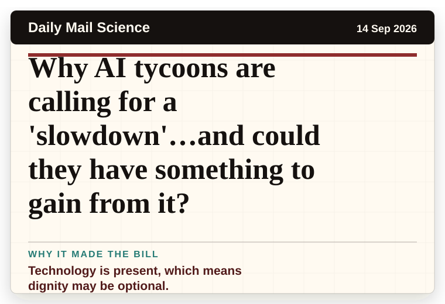
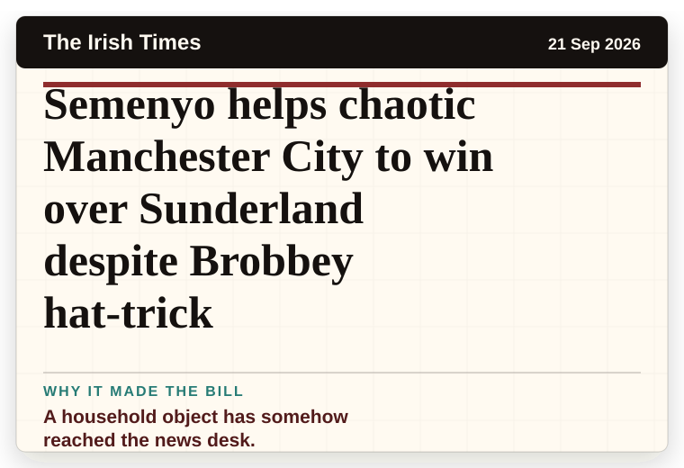
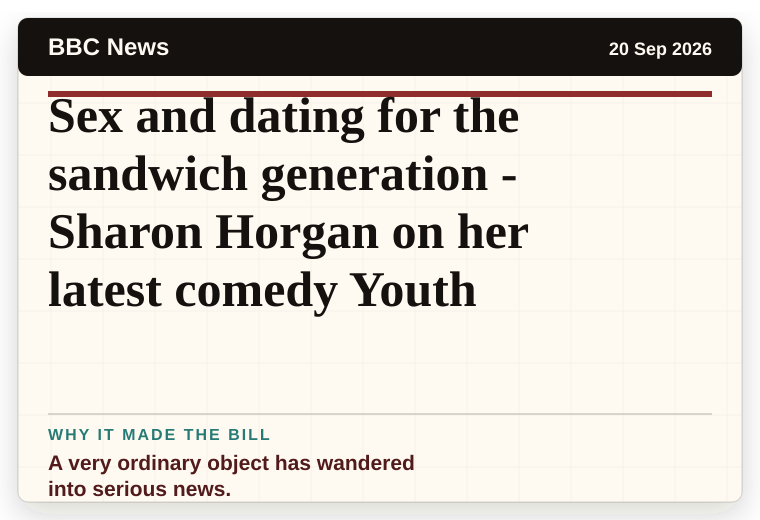
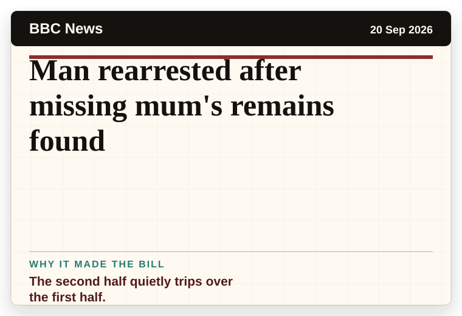
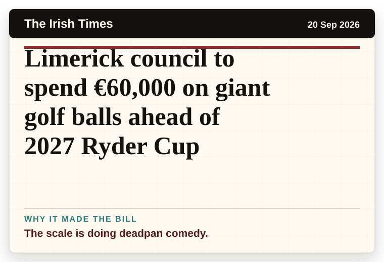

NT News
Australia
Flick: “He’s very happy to play as a nine” – Raphinha hat-trick takes season’s tally to 12 goals
A household object has somehow reached the news desk.
The latest daily picks, linked back to the original sources. Search the room, pick a source, or follow a headline out to the full story.
Record updated: 21 Sep 2026, 07:38 AM AEST
Showing 20 headline candidates from the refresh run completed on 21 Sep 2026, 07:38 AM AEST.
A household object has somehow reached the news desk.

It reads like the setup to a very dry question.

A wonderfully specific detail has taken centre stage.

The headline is already trying not to laugh.

A household object has somehow reached the news desk.

The headline is already trying not to laugh.

The headline is already trying not to laugh.

A mystery is doing a lot of work in a very small sentence.

The word chaos gives it open-mic energy.

The scale is doing deadpan comedy.

A household object has somehow reached the news desk.

The headline is already trying not to laugh.

A household object has somehow reached the news desk.

A mystery is doing a lot of work in a very small sentence.

A household object has somehow reached the news desk.

Technology is present, which means dignity may be optional.

A household object has somehow reached the news desk.

A very ordinary object has wandered into serious news.

The second half quietly trips over the first half.

The scale is doing deadpan comedy.